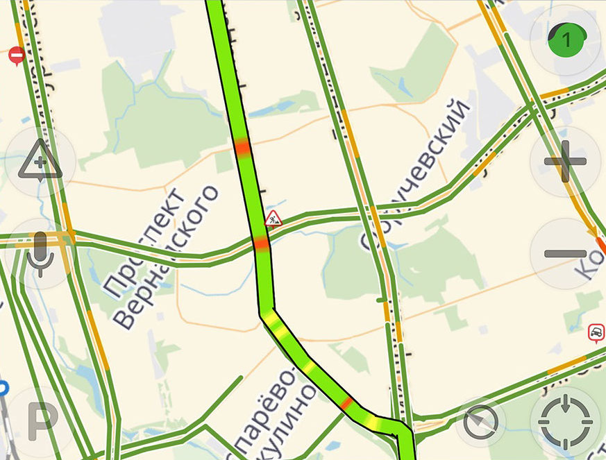

Алгоритм Дейкстры + 2D-игра = Просто
Александр Пономаренко
Алгоритм Дейкстры + 2D-игра = Просто
Александр Пономаренко
Александр Пономаренко
ГК Иннотех, Frontend-разработчик React
Программирую для web 20 лет
Создал 5 игр в рамках обучающих проектов для школьников
Источник вдохновения
Игра «Lode runner»
для ZX Spectrum
Broderbund 1984
Если вы — IT-специалист и ваша задача:
- маршрутизировать трафик по сети
Если вы — IT-специалист и ваша задача:
- маршрутизировать трафик по сети
- или создать программу-навигатор, который будет находить кратчайший путь из точки А в точку Б

Если вы — IT-специалист и ваша задача:
- маршрутизировать трафик по сети
- или создать программу-навигатор, который будет находить кратчайший путь из точки А в точку Б
- или создать программу расчета электрических цепей
Если вы — IT-специалист и ваша задача:
- маршрутизировать трафик по сети
- или создать программу-навигатор, который будет находить кратчайший путь из точки А в точку Б
- или создать программу расчета электрических цепей
- или создать компьютерную игру —
Если вы — IT-специалист и ваша задача:
- маршрутизировать трафик по сети
- или создать программу-навигатор, который будет находить кратчайший путь из точки А в точку Б
- или создать программу расчета электрических цепей
- или создать компьютерную игру —
То этот доклад для вас
Через 40 минут
вы будете знать:
- как реализовать алгоритм Дейкстры
- как на его базе создать компьютерную игру, где персонаж обходит препятствия и движется к цели
у вас будет ссылка:
- на репозиторий с исходниками алгоритма и игры
- на работающую игру в интернете
Вы сможете
- сами создавать собственные игры
- и решать задачи поиска оптимального пути, опираясь на представленный пример
Вы сэкономите 1 неделю своего времени
потому что:
- я предложу вам готовую реализацию алгоритма
- расскажу о подводных камнях, с которыми столкнулся при решении задачи
В докладе мы:
1. Применим алгоритм Дейкстры для поиска кратчайшего пути на графе
В докладе мы:
2. Преобразуем граф в квадратную сетку
В докладе мы:
3. Наложим квадратную сетку на карту уровня 2D-игры
В докладе мы:
Найдем кратчайший путь, добавляя на карту разные элементы
В докладе мы:
4. Оптимизируем алгоритм Дейкстры и получим вариант A*
В докладе мы:
5. Сравним быстродействие алгоритма Дейкстры и A*
Алгоритм Дейкстры
| N, узлов | T, сек |
| ... | ... |
| ... | ... |
| ... | ... |
A*
| N, узлов | T, сек |
| ... | ... |
| ... | ... |
| ... | ... |
Содержание
1. Алгоритм Дейкстры
2. Адаптация алгоритма Дейкстры к работе на графе - квадратной сетке
3. Решение задач расчета траектории движения
4. Алгоритм A*
5. Сравнение алгоритмов Дейкстры и A*
1. Алгоритм Дейкстры
Алгоритм Дейкстры — алгоритм на графах, изобретённый нидерландским учёным Эдсгером Дейкстрой в 1959 году. Находит кратчайшие пути от одной из вершин графа до всех остальных
Где может пригодиться алгоритм Дейкстры?
- Маршрутизация в компьютерных сетях
- Программы-навигаторы: поиск маршрута, чтобы быстрее добраться из точки А в точку Б
- В играх (вычисление оптимальной траектории движения)
- Расчет электрических цепей: ток течет по пути наименьшего сопротивления
- ...
1. Алгоритм Дейкстры. Основные моменты
- Внешний цикл - обходим все вершины графа
- Внутренний цикл - обходим соседние вершины относительно текущей
- Расчет стоимости перехода в соседнюю вершину из текущей
- При расчете стоимости запоминаем, по какому ребру перешли в данную вершину
1. Внешний и внутренний циклы алгоритма
calcVerticesCost = (fromVertex: number) => {
this.vertices[fromVertex].accessCost = 0;
this.curVertexIndex = fromVertex;
while (this.curVertexIndex !== -1) {
const curVertex = this.vertices[this.curVertexIndex];
this.vertices[this.curVertexIndex].processed = true;
const edgesOfVertex = this.getEdgesOfVertex();
for (let i = 0; i < edgesOfVertex.length; i++) { ... }
const nextVertex = this.getNextVertex(edgesOfVertex);
this.curVertexIndex = nextVertex;
}
};
1. Внутренний цикл алгоритма
for (let i = 0; i < edgesOfVertex.length; i++) {
const edgeIndex = edgesOfVertex[i];
const adjVIndex = this.getAdjancedVIndex(edgeIndex);
const adjVertex = this.vertices[adjacentVIndex];
if (adjacentVertex.processed) {
continue;
}
this.updateAccCostAndEdgeIdx(adjVertex, curVertex,
edgeIndex);
}
Содержание
1. Алгоритм Дейкстры
2. Адаптация алгоритма Дейкстры к работе на графе - квадратной сетке
3. Решение задач расчета траектории движения
4. Алгоритм A*
5. Сравнение алгоритмов Дейкстры и A*
Содержание
1. Алгоритм Дейкстры
2. Адаптация алгоритма Дейкстры к работе на графе - квадратной сетке
3. Решение задач расчета траектории движения
4. Алгоритм A*
5. Сравнение алгоритмов Дейкстры и A*
3. Исправленная функция вычисления следующей вершины
getNextVertex = (verticesToProcess: number[]): number => {
let minAccessCost = Number.MAX_SAFE_INTEGER;
let result = -1;
verticesToProcess.forEach((nodeIndex) => {
const vertex = this.vertices[nodeIndex as number];
if (vertex.processed === false &&
vertex.accessCost < minAccessCost)
{
minAccessCost = vertex.accessCost;
result = nodeIndex as number;
}
});
return result;
};
Содержание
1. Алгоритм Дейкстры
2. Адаптация алгоритма Дейкстры к работе на графе - квадратной сетке
3. Решение задач расчета траектории движения
4. Алгоритм A*
5. Сравнение алгоритмов Дейкстры и A*
4. Оптимизация. Эвристическая функция H()
H(x0, x1, y0, y1) = |x1 - x0| + |y1 - y0|
4. Настраиваем эвристическую функцию H()
H1(x, y, xT, yT) = |xT - x| + |yT - y|
H2(x, y, xT, yT) = 2 * H1()
H3(x, y, xT, yT, xS, yS) = 2 * H1() + D(), где
D(x, y, A, B, C) = |A * x + B * y + C| / sqrt(A * A + B * B)
A = yT - yS
B = xS - xT
C = xS * (yS - yT) + yS * (xT - xS)
(xT, yT) - целевая вершина
(xS, yS) - исходная вершина
(x, y) - вершина, для которой вычисляем значение H()
4. Функция вычисления следующей вершины
getNextVertex = (verticesToProcess: number[]): number => {
let minAccessCost = Number.MAX_SAFE_INTEGER;
let result = -1;
verticesToProcess.forEach((nodeIndex) => {
const vertex = this.vertices[nodeIndex as number];
const h = this.heuristic(nodeIndex, this.toVertex);
if (vertex.processed === false &&
vertex.accessCost + h < minAccessCost)
{
minAccessCost = vertex.accessCost + h;
result = nodeIndex as number;
}
});
return result;
};
4. Эвристическая функция H2()
function heuristic(v0Index: number, v1Index: number) {
const v0 = field.vIndexToPoint2D(v0Index, field.getWidth());
const v1 = field.vIndexToPoint2D(v1Index, field.getWidth());
const h = Math.abs(v0.x - v1.x) + Math.abs(v0.y - v1.y);
return h * 2;
};
4. Эвристическая функция H3()
function heuristic(v0Index: number, v1Index: number) {
const v0: Point2D = field.vIndexToPoint2D(v0Index);
const v1: Point2D = field.vIndexToPoint2D(v1Index);
const h = Math.abs(v0.x - v1.x) + Math.abs(v0.y - v1.y);
const d = getDistance(A, B, C, v0);
return h * 2 + d;
};
const getDistance = (A, B, C: number, v: Point2D) =>
Math.abs(A * v.x + B * v.y + C) / Math.sqrt(A * A + B * B);
const getA = (vS: Point2D, vT: Point2D) => vT.y - vS.y;
const getB = (vS: Point2D, vT: Point2D) => vS.x - vT.x;
const getC = (vS: Point2D, vT: Point2D) =>
vS.x * (vS.y - vT.y) + vS.y * (vT.x - vS.x);
4. Эвристическая функция H4()
H1(x, y, xT, yT) = |xT - x| + |yT - y|
H2(x, y, xT, yT) = 2 * H1()
H3(x, y, xT, yT, xS, yS) = 2 * H1() + D()
H4(x, y, xT, yT, xS, yS) = 5 * (4 * H1() + D())
Содержание
1. Алгоритм Дейкстры
2. Адаптация алгоритма Дейкстры к работе на графе - квадратной сетке
3. Решение задач расчета траектории движения
4. Алгоритм A*
5. Сравнение алгоритмов Дейкстры и A*
5. T(N) – время расчета графа
Реализация алгоритма Дейкстры
| N, сторона квадрата | N2, узлов в графе | T, миллисекунд |
| 10 | 100 | 3 |
| 100 | 10 000 | 557 |
| 1 000 | 1 000 000 | 51 555 |
5. T(N) – время расчета графа
Реализация алгоритма Дейкстры
| N, сторона квадрата | N2, узлов в графе | T, миллисекунд |
| 10 | 100 | 3 |
| 100 | 10 000 | 557 |
| 1 000 | 1 000 000 | 51 555 |
Реализация алгоритма A*
| N, сторона квадрата | N2, узлов в графе | T, миллисекунд |
| 10 | 100 | 2 |
| 100 | 10 000 | 14 |
| 1 000 | 1 000 000 | 835 |
| 10 000 | 100 000 000 | *out of memory |
Содержание
1. Алгоритм Дейкстры
2. Адаптация алгоритма Дейкстры к работе на графе - квадратной сетке
3. Решение задач расчета траектории движения
4. Алгоритм A*
5. Сравнение алгоритмов Дейкстры и A*
Выводы
1. Алгоритм Дейкстры проще в реализации, чем A*
2. A* эффективнее, чем алгоритм Дейкстры
3. Можно создавать свои игры на основе работающего примера:
https://github.com/alexanderpono/bricks-runner
4. Не бойтесь экспериментировать. Преимущество фронтенда – можно сразу увидеть результат!
Что еще почитать?
- A* - развитие алгоритма Дейкстры https://www.redblobgames.com/pathfinding/a-star/introduction.html
- Еще об алгоритмах на графах https://habr.com/ru/companies/timeweb/articles/751762/
Спасибо за внимание!
Вопросы?
Александр Пономаренко
Описание A*
Алгоритмы
на графах
Александр Пономаренко
Новости ИТ
в Иннотехе и Т1
Исходники игры